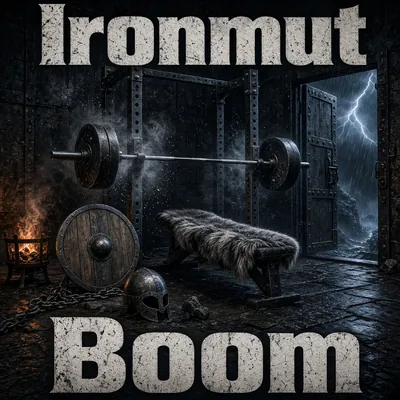
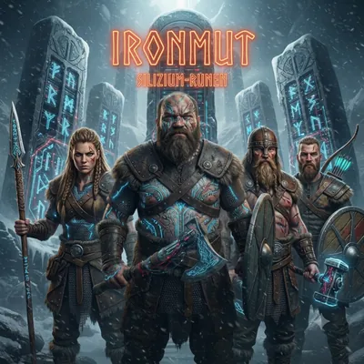
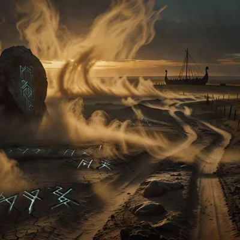
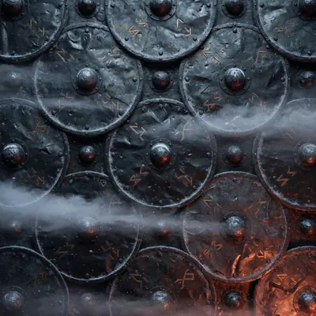
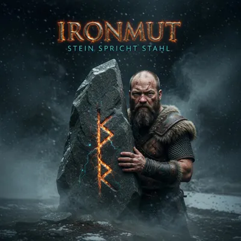
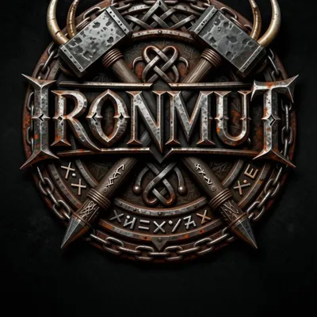
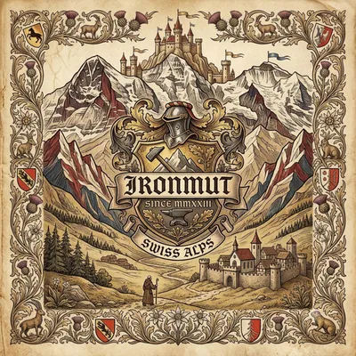
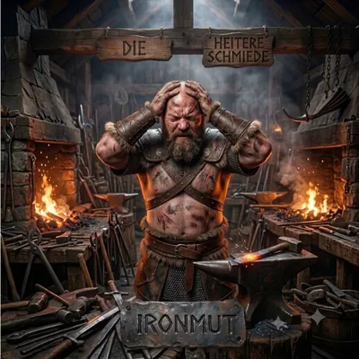

Runen im Staub
Album · 12 Tracks
- Küste ohne Namen
- Blündern und nichts
- Kopfschmuck und Knochen
- Sie lehren uns das Land
- Monate im Staub
- Von der Sippe fort
- Der einsame Cowboy
- Skál und Yippie-ya-yeah
- Feindlicher Clan
- Blutsbrüder (kein Zaun)
- Axt und Lasso
- Zwei Feuer, ein Eid

Album
Boom
Mehr Masse. Weniger Worte.
Jetzt überallSeit 17.10.2026
- HamrTeaser
- MeginTeaser
- Sie lachenTeaser
- Was ich von Natur aus binTeaser
Auswahl, vollständige Trackliste ab Release.
Über Ironmut
KI-Musikprojekt
Keine Band. Keine Besetzung. Eisen aus der Maschine.
Ironmut ist ein KI-Musikprojekt: Viking-Country-Metal, komplett mit künstlicher Intelligenz erschaffen. Hinter dem Projekt steht Iwan Kollegger als Architekt. Er erdenkt Ideen, Texte und Klang, die KI schmiedet.
- Genre
- Viking-Country-Metal
- Architekt
- Iwan Kollegger
- Kanäle
- @ironmutmusic
Silizium-Runen
Album · 13 Tracks

- Der Funke im Sand
- Silizium-Runen
- Der Geist im Amboss
- Das Flüstern der Runen
- Im Datennebel
- Digitaler Met
- Die schweigenden Hallen
- Epoche Null
- Der Code des Allvaters
- Die große Bereinigung
- Götterdämmerung
- Eisen und Kern
- Odins Stahl gegen flüssiges Chrom
Diskografie
Alle Releases

Album · neuRunen im Staub
Jetzt hören- Album
Boom
Jetzt hören 
SingleShieldwall
SpotifyAppleAlle Stores
SingleStein spricht Stahl
SpotifyAppleYouTube- Album
Silizium-Runen
SpotifyApple 
AlbumUrsprung
SpotifyApple
Single1.August
SpotifyApple
ComedyDie heitere Schmiede
SpotifyApple
Kanäle
Überall @ironmutmusic